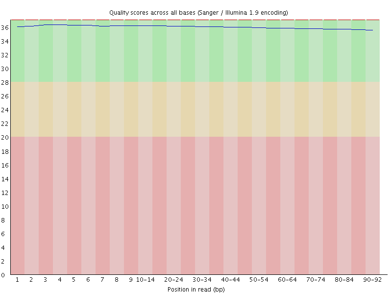
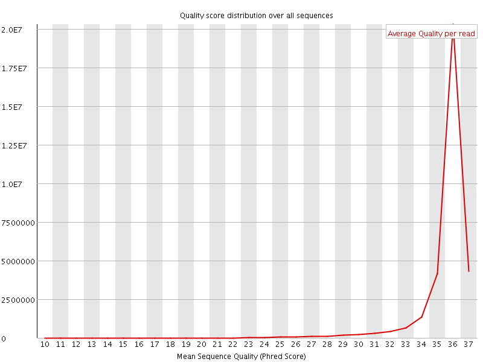
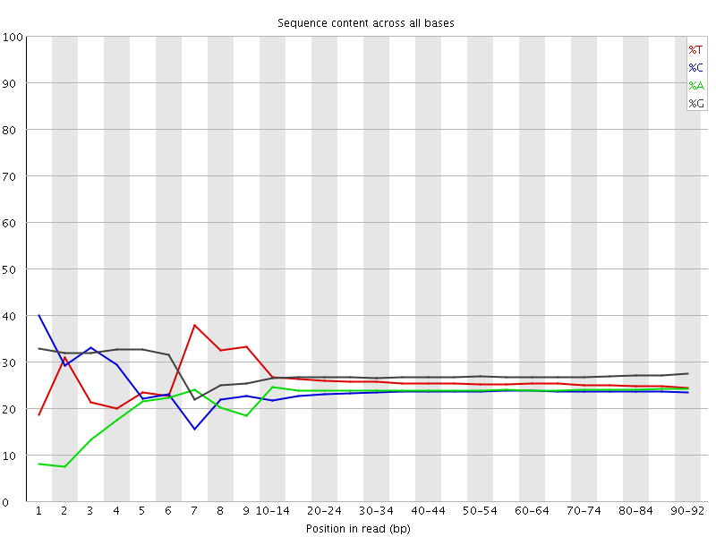
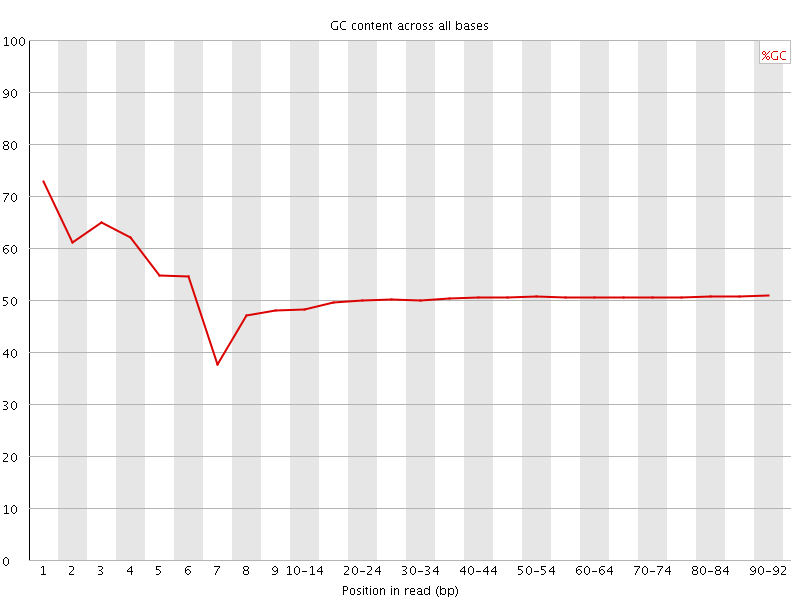
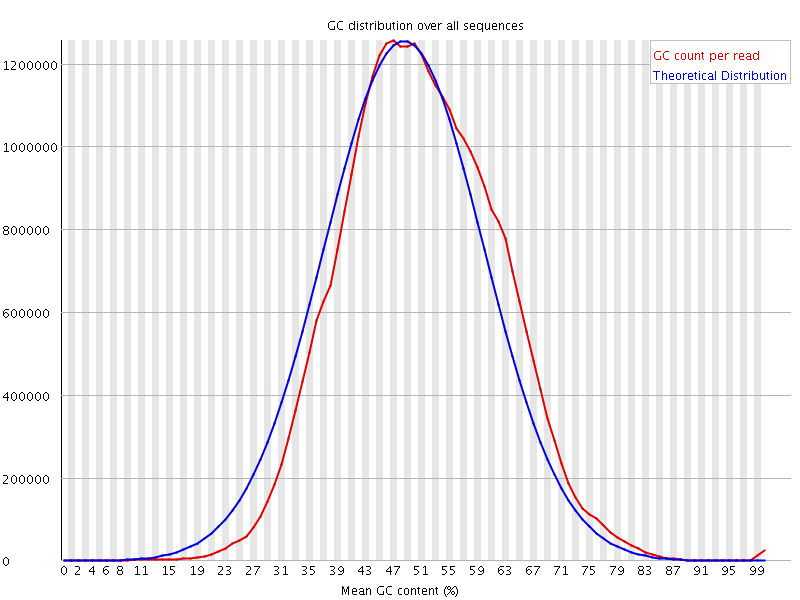
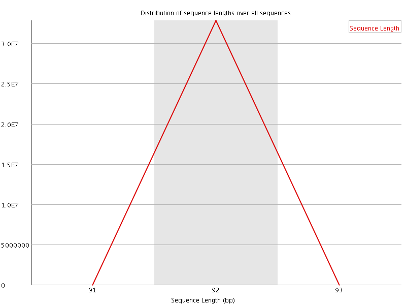
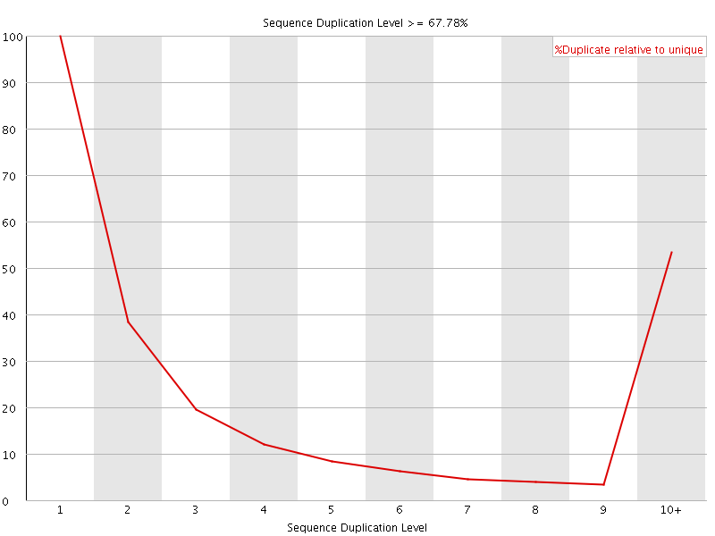
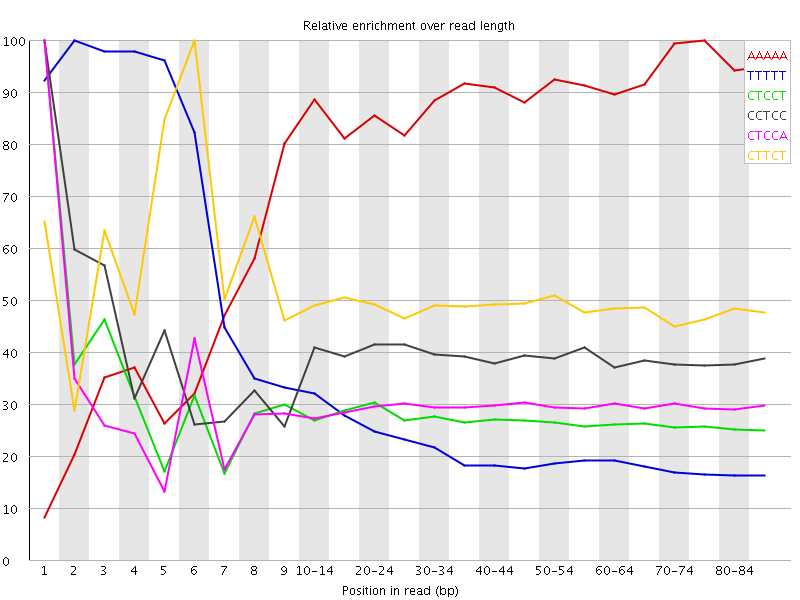

![[OK]](Icons/tick.png) Basic Statistics
Basic Statistics
| Measure | Value |
|---|---|
| Filename | SAMPLE_001_R2.fastq.gz |
| File type | Conventional base calls |
| Encoding | Sanger / Illumina 1.9 |
| Total Sequences | 32819701 |
| Filtered Sequences | 0 |
| Sequence length | 92 |
| %GC | 50 |
Per base sequence quality

Per sequence quality scores

![[FAIL]](Icons/error.png) Per base sequence content
Per base sequence content

Per base GC content

Per sequence GC content

Per base N content

Sequence Length Distribution

Sequence Duplication Levels

Overrepresented sequences
No overrepresented sequences
![[WARN]](Icons/warning.png) Kmer Content
Kmer Content

| Sequence | Count | Obs/Exp Overall | Obs/Exp Max | Max Obs/Exp Position |
|---|---|---|---|---|
| AAAAA | 9942295 | 4.910489 | 5.756173 | 75-79 |
| TTTTT | 13092100 | 4.084585 | 15.628567 | 2 |
| CTCCT | 7100020 | 2.7740855 | 9.9217825 | 1 |
| CCTCC | 6525220 | 2.7480798 | 6.90054 | 1 |
| CTCCA | 6215475 | 2.662162 | 8.841809 | 1 |
| CTTCT | 7151450 | 2.5922718 | 5.196046 | 6 |
| GGGGG | 10980765 | 2.5733302 | 9.161276 | 1 |
| TCCTC | 6358965 | 2.4845443 | 6.10583 | 2 |
| CCCAG | 5949065 | 2.4063222 | 6.819005 | 1 |
| CTTCA | 5508265 | 2.188775 | 5.449532 | 6 |
| TCCAG | 5782315 | 2.1698658 | 5.026748 | 2 |
| CCCCA | 4409930 | 2.0359437 | 8.450359 | 1 |
| CTGGG | 7004755 | 1.9839926 | 5.7524095 | 1 |
| CTCCC | 4515665 | 1.9017608 | 9.1830435 | 1 |
| CCTCT | 4735285 | 1.8501477 | 5.677237 | 3 |
| CCCAC | 3711030 | 1.7132807 | 5.3727884 | 1 |
| GGGGC | 6266530 | 1.6761739 | 5.3845773 | 2 |
| GGGGA | 6064050 | 1.6496079 | 5.476586 | 1 |
| GTGGG | 5975370 | 1.4828011 | 5.198961 | 1 |
| CCCCC | 3125605 | 1.4188687 | 6.0281973 | 1 |
| CCCCT | 3117365 | 1.3128704 | 5.2391896 | 1 |
| CGGGG | 3897980 | 1.0426332 | 6.3955064 | 1 |